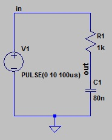
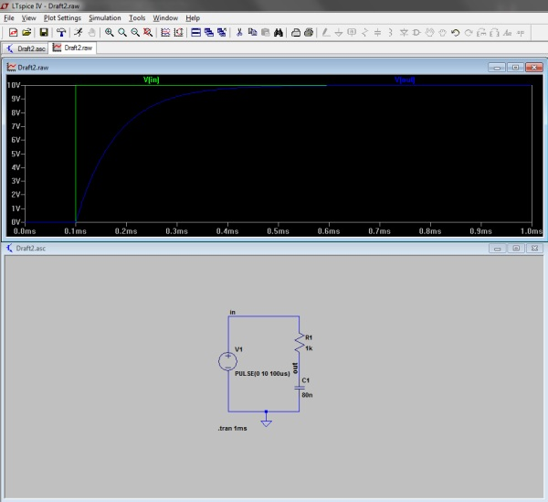
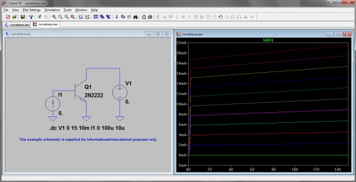

Simulation mit LTspice IV
RC-Tiefpass | Bipolarer Transistor 2N222
RC-Tiefpass
Zum Einstieg in die Simulation mit LTspice IV untersuchen wir das Zeitverhalten von einem einfachen RC-Tiefpass. Der Tiefpass besteht aus einem Widerstand R1 = 1kOhm, einer Kapazität C1 = 80nF und einer Gleichspannungsquelle, die nach 100µs von 0V auf 10V rechteckförmig ansteigt. Die Elemente lassen sich einfach über die Symbole in der Toolbar platzieren, die Spannungsquelle findet man über das Symbol "Component", hier ist dann aus der Liste "voltage" auszuwählen. Die Parameter lassen sich über ein Rechtsklick auf das Bauelement ändern. Über das Symbol "Label Net" habe ich die Verbindung zwischen Spannungsquelle und Widerstand mit "in" bezeichnet und mit "out" die Verbindung zwischen dem Widerstand und der Kapazität.

Nach 100µs lädt sich der Kondensator über den Widerstand R1 bekanntlich nach folgender Formel auf:
uc=U(1-e-t/RC)
Nachdem die Simulation über Simulation->Run (Transient) gestartet wurde, erscheint ein zunächst noch leerer Plot. Hier müssen wir die Marker in und out aus der Schaltung auswählen. Als Ergebnis erhalten wir die Sprungantwort von unserem RC-Tiefpass.

Bipolarer Transistor 2N2222
Als nächstes möchten wir das Ausgangskennlinienfeld eines bipolaren Transistors untersuchen, dazu verwenden wir den folgenden Simulationsbefehl:
.dc V1 0 15 10mV I1 0 100u 10u
Der Befehl besagt, dass die Spannungsquelle V1 von 0V in 10mV Schritten auf 15V ansteigen soll. Die Gleichstromquelle I1 für die Basis steigt von 0A in 10µA Schritten auf den Endwert von 100µA. ".dc" steht für Gleichstromanalyse.

Quelle(n):
- Wolfgang Puffitsch, Einführung in LTspice, 2010
- Gunthard Kraus, SPICE-Schaltungs-Simulation mit LTspice IV